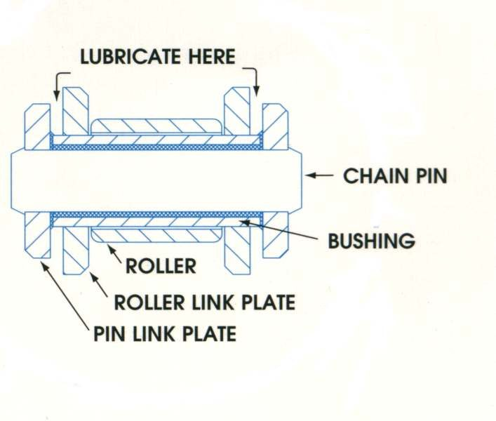
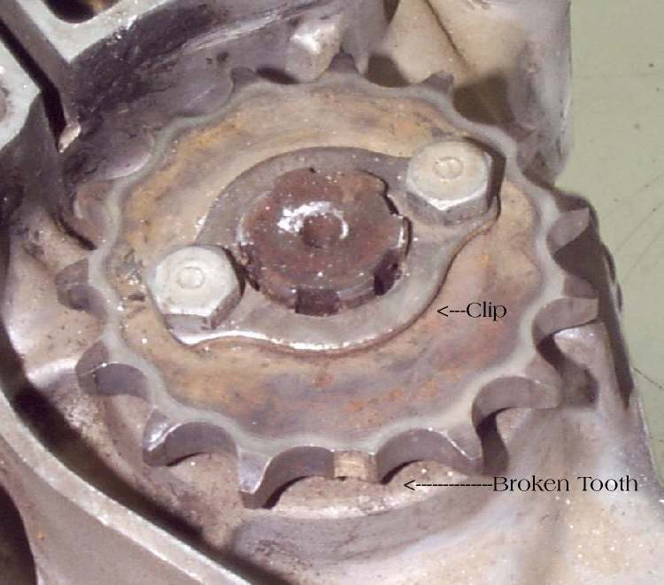

When you roll the bike and check the slack at different points, it changes: tight at one spot, loose a little further on. This happens when the chain has worn unevenly, when some links have gone stiff, or when a sprocket is bent or sits off-centre. The danger is setting the slack at a loose spot: at the tight spot the chain is then far too tight, which strains the gearbox output bearing and the wheel bearing and can make the wheel drag.
Is it safe to ride?
Ride with care, after you have set the slack at the tightest point. Do not ride with the chain tight at any point.
Quick checks first
- Bike upright, in neutral: measure slack, roll forward a little, measure again, all the way round the chain.
- Watch the links go round the rear sprocket: do any stay bent?
- Watch the rear sprocket edge as the wheel turns: does it wobble?
Diagnose it step by step
1Does the slack vary as you roll the chain round?
- Yes: mark the tightest point with chalk. Go to step 2.
- No: the chain is even; if it is noisy, see Chain is noisy, clattering or slapping.
2Do one or more links stay bent (kinked) as they leave the rear sprocket?
- Yes: Clean and lubricate the chain, working oil into the stiff links. If they stay stiff, the K-Light manual says replace the chain. See Chain is dry, rusty or has stiff links.
- No: go to step 3.
3Does the rear sprocket wobble, or are its nuts loose?
- Yes: Inspect sprockets. Loose nuts are tightened in a criss-cross pattern (K-Light 125: 45 to 50 N·m, in two or three passes). A bent sprocket is replaced with the chain.
- No: go to step 4.
4Is the chain old, with the adjusters near the end of their range?
- Yes: it has worn unevenly. Check the chain for wear, then Replace the chain and sprockets.
- No: go to step 5.
5Set the slack at the tightest point. Is it in range there? (K-Light 125: 20 to 40 mm.)
- Check and adjust chain slack. Then roll the chain round again: no point should be tighter than the lower limit.
What happens if you ignore it: the tight spot pulls hard on the gearbox output shaft and wheel bearings every turn, makes the bike feel held back (Bike feels held back), and the loose spot can let the chain jump.
Causes, most likely first
| Cause | How to confirm | Fix |
|---|---|---|
| Stiff links | Links stay bent off the sprocket | Clean and lubricate the chain or replace |
| Uneven chain wear | Old chain, adjusters far back | Replace the chain and sprockets |
| Bent sprocket or loose nuts | Sprocket wobbles | Inspect sprockets |
| Slack set at a loose point | Tight spot below range | Check and adjust chain slack |
Reference values (K-Light 125)
| Item | Value | Source |
|---|---|---|
| Chain slack, bike upright | 20 to 40 mm | K-Light 125 manual, PDF p. 61 |
| Rear sprocket nuts | 45 to 50 N·m, two or three passes, criss-cross | K-Light 125 manual, PDF p. 177 |